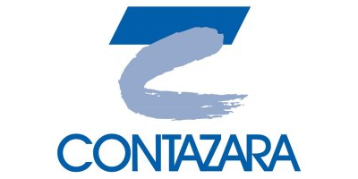
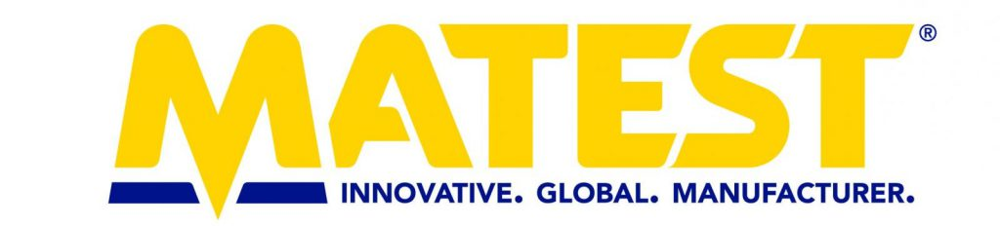

Melhoria da Qualidade da Água no País
Decorreu nos dias 02 a 13 do passado mês de Abril, na sala Pemba do Hotel Tivoli, na Cidade de Maputo, a formação sobre uso dos Kits de Análise de…
Leia maisSomos uma empresa moçambicana, localizada na cidade de Maputo, focada no desenvolvimento de soluções e realizações de projectos, tendo como ponto primordial proporcionar aos nossos clientes produtos e serviços de alta qualidade com métodos e tecnologias mais recentes de acordo com as suas necessidades...
LEIA MAIS
Decorreu nos dias 02 a 13 do passado mês de Abril, na sala Pemba do Hotel Tivoli, na Cidade de Maputo, a formação sobre uso dos Kits de Análise de…
Leia maisEquipamentos didácticos, laboratoriais e de investigação para escolas, centros de formação, laboratórios e universidades.
MAISEquipamentos hospitalares, laboratoriais, de investigação e reagentes para hospitais, unidades de saúde e laboratórios.
MAISSistemas de monitorização da água, solo e ar, unidades de tratamento de águas e águas residuais, instrumentação e sistemas de aquisição e registo de dados...
MAISTrabalhar com a Trionica foi uma experirencia....
Trabalhar com a Trionica foi uma experirencia....



